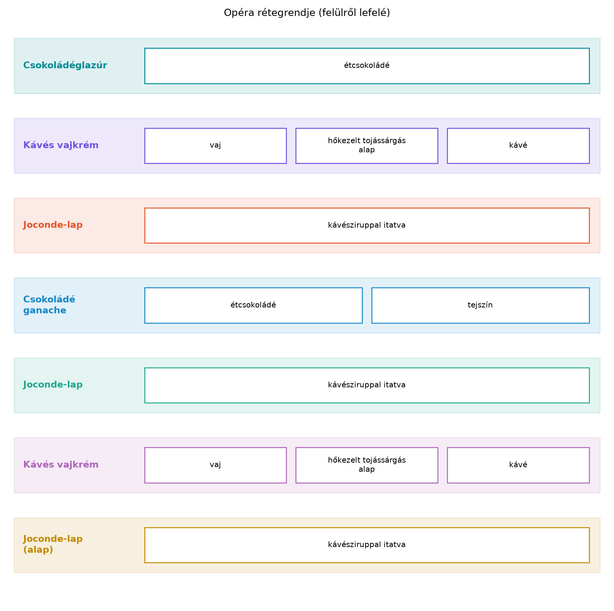

Egy cukrászüzemben a vendégkör nem áll meg a hazai süteményeknél. Évfordulós tortaként Sacher-tortát kérnek; olasz témájú rendezvényre tiramisu kell; nyáron francia gyümölcsös tarte kerül a vitrinbe. A magyar cukrász akkor tud megbízhatóan dolgozni, ha a nemzetközi klasszikusokat is ugyanazzal a mérnöki pontossággal, higiéniával és allergéntudatossággal közelíti meg, mint a Dobos tortát vagy a krémeseket. Ebben az alfejezetben hat klasszikus terméket vizsgálunk meg: Sacher-torta, Fekete-erdő torta (Schwarzwälder Kirschtorte), Opéra, tiramisu, cheesecake és francia tarte-ok. Mindegyiknél kiemeljük, mitől nemzetközi a felépítése, hol vannak a technológiai és élelmiszerbiztonsági kritikus pontjai, és mire kell figyelni a megnevezésnél.
Az alábbi táblázat egyetlen pillantásra mutatja, hogy a klasszikus nemzetközi termékek különböző tészta- és krémrendszert használnak.
| Termék | Származás | Fő tészta/alap | Fő krém/töltő | Tipus |
|---|---|---|---|---|
| Sacher-torta | Ausztria | csokoládés felvert | baracklekvár + csokoládébevonó | tömör, hűthető |
| Fekete-erdő | Németország | kakaós felvert | cseresznye + tejszín | tejszínes, alkoholos |
| Opéra | Franciaország | joconde (mandulás felvert) | kávés vajkrém + ganache | réteges, intenzív |
| Tiramisu | Olaszország | babapiskóta (felvert) | mascarpone + tojás | hideg, krémes |
| Cheesecake | USA | kekszes alap | krémsajt + tojás | sült, krémszerű |
| Tarte | Franciaország | omlós vajas | gyümölcs vagy krém | nyitott, vékony |
A képtábla a táblázat termékeit a felismeréshez mutatja: cellánként a termék sematikus nézete és a fő rétegek metszete (alulról felfelé).
Az Opéra rétegrendjét az alábbi ábra mutatja felülről lefelé: vékony, sziruppal itatott lapok és krémek váltakoznak; ez segít megérteni, miért van szüksége hosszú hűtésre a szeletelés előtt.

Definíció. Klasszikus nemzetközi cukrászati termék: olyan, más ország cukrászati hagyományából származó készítmény, amelynek neve, jellegzetes rétegrendje, alapanyag-kombinációja és elkészítési módja nemzetközileg ismert. Nem jogi kategória, hanem szakmai-történeti megnevezés.
Definíció. Joconde lap: mandulaliszttel dúsított, vékony, magas tojástartalmú felvert lap, amelyet főleg francia szelet-tortákhoz használnak. A neve a francia biscuit joconde kifejezésből jön.
Szabály. A termék neve ne legyen megtévesztő. Ha „eredeti”, „hagyományos” vagy helyhez kötött jelzőt használunk, annak pontosan meg kell felelnie a jelzett hagyománynak vagy oltalomnak. A megtévesztő jelölést a fogyasztói tájékoztatási szabályok tiltják.
Jogszabály. Az élelmiszerek fogyasztói tájékoztatására vonatkozó uniós rendelet (1169/2011/EU) alapján az élelmiszer megnevezése nem lehet megtévesztő, és a lényeges tulajdonságokat (összetétel, előállítás, eltarthatóság) a fogyasztó számára érthető módon kell megadni. Az „eredeti Sacher-torta” jellegű megnevezéseknél védjegyjogi és esetleges földrajzi árujelzői kérdések is felmerülhetnek (ellenőrizendő: aktuális oltalom alatt álló megnevezések és védjegyek listája).
Szabály. A nemzetközi klasszikusoknál is érvényes ugyanaz a higiéniai logika, mint a magyar termékeknél: a tojásos, tejes, tejszínes rendszerek hőkezelést, gyors hűtést és hűtött tárolást igényelnek. A nyers tojásos változat csak pasztőrözött tojástermékkel vagy hőkezelt tojásos alappal készülhet.
A Sacher-torta Ausztriából származó, de ma már világszerte ismert csokoládétorta. Jellegzetessége a tömör, csokoládés piskóta, a vékony sárgabarack-lekvár réteg és az egyenletes csokoládébevonat. A klasszikus felépítés: a csokoládés lapot egyszer kettévágjuk, baracklekvárral töltjük és bekenjük, majd cukorszirupból és csokoládéból főzött csokoládémázzal (Sacher-máz) vonjuk be (ellenőrizendő: forrás).
A hagyomány szerint a piskóta vajat és olvasztott csokoládét is tartalmaz, ezért nehezebb, tömörebb, mint egy magyar piskóta. A pontos eredeti arány védett, ezért a tankönyv tanulási receptet ad, nem „eredeti Sacher” formulát. A lapot kb. 180–190 °C-on sütjük, tűpróbáig (ellenőrizendő: sütőtípus és receptúra szerint).
A baracklekvárnak simának, áttörtnek kell lennie. A csokoládémáz nem temperált csokoládé, hanem főzött máz: a szirup főzési foka és a bevonáskori hőmérséklet döntő, különben a máz fénytelen, csíkos, szemcsés vagy túl puha marad (ellenőrizendő: forrás és receptúra).
A Fekete-erdő torta (Schwarzwälder Kirschtorte) német specialitás. Kakaós felvert lapokból, tejszínhabból és meggyből/cseresznyéből épül. A hagyományos változat kirsch (cseresznyepárlat) tartalmú. Az alkoholtartalmú változat gyermekeknek nem adható, és a fogyasztói tájékoztatásnál az alkohol jelenlétét jelezni kell (ellenőrizendő: az alkoholos italok és élelmiszerek jelölési határértékei).
A tejszínhab hőmérséklete és hűtése kritikus: a kész tortát 5 °C alatt kell tartani, a tejszínhabot frissen felverni, és kerülni a szobahőmérsékletű tárolást (ellenőrizendő: hűtési hőmérséklet és időtartam a hatályos útmutató szerint). A cseresznyét alaposan le kell csepegtetni, különben a tejszín és a lap elázik.
Az Opéra francia rétegtorta. Vékony joconde lapok, kávésziruppal itatva, kávés vajkrém és csokoládé ganache rétegek egymás után. A tetejét csokoládéglazúrral vagy vékony ganache-csal vonják be. A rétegek nagyon vékonyak, ezért a lapokat egyenletes vastagságra kell kenni. A kész szeletet legalább 4–6 órán át hűtve dermesztik, hogy a vajkrém megkötődjön, és a vágás tiszta legyen (ellenőrizendő: dermesztési idő a hőmérséklet függvényében).
A joconde laphoz mandulaliszt kell, ami allergén. A kávés vajkrémhez hőkezelt tojássárgás alapot (főzött sárgakrém vagy pâte à bombe) használunk, nem nyers tojást.
A tiramisu olasz hideg desszert. Babapiskótát (vagy tojásfehérjés piskótát) kávéba mártva rétegeznek mascarponekrémmel, majd kakaóporral szórják. A hagyományos olasz recept nyers tojássárgáját és tojásfehérjéjét használ. A cukrászüzemben ez csak pasztőrözött tojástermékkel engedhető meg, vagy a tojást hőkezelt alapként (cukorral gőz fölött felmelegített tojássárgás sabayon (zabaione)) lehet beépíteni. A kész tiramisu hűtött termék; a kávéba mártásnál ne áztassuk túl a piskótát.
A cheesecake (New York-i sajttorta) sült, krémsajtos desszert. Alapja gyakran darált keksz vajjal. A krémsajtos töltelék tojást, cukrot, krémsajtot (és sokszor tejszínt) tartalmaz. A tojás a hőkezelés során koagulál, és megfogja a krémet. A sütés alacsony hőfokon, vízgőzben vagy gőzfürdőben történik, hogy a töltelék ne repedjen meg. A maghőmérsékletnek el kell érnie a tojásos rendszer biztonságos hőkezeléséhez szükséges értéket (ellenőrizendő: hatályos maghőmérséklet-ajánlás).
A tarte egy vékony, vajas omlós tésztából készült nyitott, peremes lepény. Lehet sült krémmel (pl. tarte au citron, citromos krémmel), friss gyümölccsel (pl. eper, málna, barack), vagy sült almával. A tészta vajban gazdag, ezért a nyújtás előtt hűteni kell. A vakon sütés (vaksütés) megakadályozza, hogy a nedves töltelék eláztassa az aljat. A franciás tarte-oknál a gyümölcs friss jellege és a vajas tészta ropogóssága a cél.
A Sacher-torta tanulási receptje 1 db 24 cm átmérőjű tortára, 16 szeletre szól (tanulási példa, nem az „eredeti” formula; ellenőrizendő: forrás). Az anyaghányad:
| Nyersanyag | Mennyiség (g) | Megjegyzés |
|---|---|---|
| Vaj | 140 | puha, a lapba |
| Porcukor | 60 | a vajhoz |
| Tojássárgája | 120 | a vajas masszába (kb. 6 db) |
| Étcsokoládé | 140 | olvasztva, a lapba |
| Tojásfehérje | 180 | habbá verve (kb. 6 db) |
| Kristálycukor | 90 | a fehérjehabba |
| Finomliszt | 120 | a lapba |
| A lap összesen | 850 | |
| Baracklekvár | 200 | áttört, a töltéshez és a bekenéshez |
| Kristálycukor | 150 | a mázhoz |
| Víz | 75 | a mázhoz |
| Étcsokoládé | 150 | a mázhoz |
| Összes nyersanyag | 1425 |
A tojás összesen , a cukor a lapban , a liszt ; a későbbi feladat ezekből a tételekből dolgozik. Egy esküvői rendezvényre 60 szeletet kell készíteni. A szorzószám:
A tojás mennyiségét (sárgája + fehérje) átszámolva:
Számítás. A 60 szeletre átszámított anyaghányad nagyításához a szorzószámot minden tételre alkalmazzuk. A táblázat mennyiségei nyersanyagok, vagyis a sütési veszteséget már tartalmazzák: a nyersanyagokat nem kell a veszteséggel növelni. A veszteség (a kakaós lapnál kb. 10%, ellenőrizendő: a sütőtől és a lap vastagságától függ) csak a kisült lap tömegének becsléséhez kell. A bemutatott szorzószámos átszámítás a Receptúra és anyaghányad: nagyítás, kicsinyítés, szorzószám alfejezetben tanult módszer közvetlen alkalmazása.
Cél. 12 pohár tiramisu (1 adag ≈ 100–110 g) elkészítése pasztőrözött tojástermékkel vagy hőkezelt tojásos alappal. A termék hűtött, kávéval és kakaóval rétegzett.
Eszközök és anyagok. Kézi habverő vagy keverőgép, tálak, adagolópoharak, tálca a dermesztéshez, kávéfőző. Mérleg, hőmérő.
Higiéniai munkakezdés. Munkaruha, hajháló, ékszer le, kézmosás, tiszta eszközök, hűtött alapanyagok. A pasztőrözött tojásterméket folyamatosan hűtve kell tárolni.
Biztonsági korlát. A gépi művelet tanműhelyi vagy üzemi környezetben, oktatás után és felügyelet mellett végezhető; otthon háztartási géppel, kis adagban gyakorolj.
Technológiai lap.
| Nyersanyag | Mennyiség (g) | Megjegyzés |
|---|---|---|
| Mascarpone | 500 | hűtve |
| Pasztőrözött tojássárgája | 90 | fertőzésmentes, hűtött |
| Pasztőrözött tojásfehérje | 120 | hűtött |
| Cukor | 100 | |
| Babapiskóta | 250 | olasz savoiardi |
| Kávé (főzött, erős) | 400 | hűtve |
| Kakaópor (holland, zsírszegény) | 20 | szóráshoz |
| Összes tömeg | 1480 | a teljes kávéval együtt; a kávénak csak egy része épül be |
A kávé a babapiskóta rövid mártásához kell: a piskóta a saját tömegének kb. 0,5–1-szeresét veszi fel (ellenőrizendő), vagyis a 400 g kávéból kb. 125–250 g épül be. A beépülő anyagok tömege , ehhez a beépülő kávé –, így a készítmény kb. –; ez és adagonként.
Az alábbi táblázat a hat klasszikus termék legfontosabb érzékszervi ellenőrzési pontjait foglalja össze.
| Termék | Forma/méret | Felület | Metszet/állag | Íz/illat |
|---|---|---|---|---|
| Sacher-torta | 24 cm, 16 szelet | fényes, sima bevonat | tömör lap, vékony lekvár | csokoládé, barack |
| Fekete-erdő | 24–26 cm | tejszínhab és cseresznye | kakaós lap, tejszín | cseresznye, enyhe kirsch |
| Opéra | 30×20 cm, 15 szelet | fényes glazúr | vékony rétegek | kávé, csokoládé, mandula |
| Tiramisu | 12 poharas adag | kakaóporos | krémes, piskótás | kávé, kakaó, mascarpone |
| Cheesecake | 24 cm, 12–16 szelet | aranysárga, repedésmentes | sűrű, krémszerű | krémsajt, vanília |
| Tarte | 22–26 cm, 8–10 szelet | fényes gyümölcs | ropogós alap, friss töltő | gyümölcs, vajas tészta |
Minden készterméknél mérjük a tömegét és vetjük össze a technológiai lapon feltüntetett nettó tömeggel. A hűtött termékeknél a maghőmérsékletet a kiadás előtt ellenőrizni kell (ellenőrizendő: belső eljárás szerinti gyakoriság).
Tünet: A Sacher-torta csokoládébevonata
szürkés-fehér, csíkos.
Ok: a cukorszirup főzési foka nem megfelelő (túl
alacsony vagy túl magas), vagy a máz bevonáskor túl meleg vagy túl hideg
volt, ezért a cukor kikristályosodik, illetve a zsír kiválik.
Megelőzés: a szirup főzési fokának és a máz bevonási
hőmérsékletének betartása a receptúra szerint (ellenőrizendő), a
lekvározott lap hűtése bevonás előtt; javítás: a mázat kevés meleg
vízzel vagy sziruppal óvatosan újramelegíteni és simára
keverni.
Tünet: A tiramisu alján folyadék gyűlik össze, a
piskóta szétázott.
Ok: a babapiskótát túl sokáig áztatták, vagy a krémet
túl puhára keverték.
Megelőzés: rövid mártás, jól lecsepegtetett piskóta,
jól felvert fehérje; javítás: a hibás adagokat ne tálaljuk, a receptet
igazítsuk.
Tünet: A cheesecake közepe folyós, a teteje
megrepedezett.
Ok: nem érte el a maghőmérsékletet, vagy a sütő hőfoka
túl magas, a gőzfürdő hiányzik.
Megelőzés: alacsony hőfok, vízgőz,
maghőmérséklet-ellenőrzés; javítás: az alulsült tortát vissza lehet
sütni alacsony hőfokon, de a repedt felületű termék minőségi
hibás.
Egy kávéházi cukrászműhelyben a hétvégi olasz témájú rendezvényre 40 adag tiramisut kell előállítani. A konyhafőnök ellenőrzi a hűtő hőmérsékletét: 6 °C-ot mutat. A HACCP-eljárás szerint a kész tiramisu tárolási hőmérséklete 5 °C alatt van (ellenőrizendő: az üzemi GHP/HACCP terv szerinti határ). A dolgozó azonnal értesíti a műszakvezetőt, aki kisebb beállítást végez a hűtőn, és a terméket egy másik, megfelelő hűtőbe helyezi. A hőmérsékletet feljegyzik a hűtőnaplóba. A hibás hűtőből kikerült tételek eltarthatóságát lerövidítik, és a következő műszakban fokozottan ellenőrzik. Tanulság: a kritikus határ átlépése nem automatikusan selejtezést jelent, hanem helyesbítő tevékenységet és dokumentált döntést.
1. feladat (A) Sorold fel a hat bemutatott nemzetközi klasszikust, és mindegyiknél nevezd meg a fő tésztát és a fő krémet/töltőt.
2. feladat (A) Hozz termékmegnevezési döntést: Az üzemben a Sacher-tortához mandulás lapot, málna lekvárt és fehér csokoládébevonatot használnak. Használhatod-e az „eredeti Sacher-torta” nevet? Indokold 1–2 mondatban.
3. feladat (B) A Sacher-torta tanulási receptje 16 szeletre szól. Számítsd át a Sacher-torta anyaghányad-táblázatának tojás- (sárgája + fehérje = 300 g), cukor- (a lapban 150 g) és lisztmennyiségét (120 g) 60 szeletre. Add meg a szorzószámot és az új tömegét mindhárom anyagnak.
4. feladat (B) Egy tiramisu technológiai lapja 12 adagra 500 g mascarponét ír. Hány gramm mascarpone kell 30 adaghoz, és hány gramm babapiskóta, ha az eredeti mennyiség 250 g?
5. feladat (C) Hibatáblázat: Az Opéra szeleteinek vágásakor a rétegek összenyomódnak, a vajkrém kifolyik. Milyen három lehetséges okot vizsgálnál meg (hőfok, dermesztési idő, vajkrém arány), és milyen javítást javasolnál?
6. feladat (D) Készítsd el a 12 adagos tiramisut a gyakorlati útmutató szerint. Töltsd ki a technológiai lapot, és értékeld a terméket a minőségi jellemzők alapján.
Önellenőrzés – válaszok
1. feladat (A)
A táblázat a fenti „Szemléletes kép” részben megtalálható. Fontos:
Sacher: csokoládés felvert, baracklekvár + csokoládé; Fekete-erdő:
kakaós felvert, cseresznye + tejszín; Opéra: joconde, kávés vajkrém +
ganache; Tiramisu: babapiskóta, mascarpone + tojás; Cheesecake: kekszes
alap, krémsajt + tojás; Tarte: omlós vajas, gyümölcs vagy krém.
2. feladat (A)
Nem. A felsorolt összetevők jelentősen eltérnek a Sacher-torta
jellegzetes összetételétől (baracklekvár, étcsokoládé, kakaós piskóta),
ezért az „eredeti Sacher-torta” megtévesztő lenne. Helyesen például
„csokoládés mandulatorta málna lekvárral” megnevezést lehet
használni.
3. feladat (B)
Szorzószám:
.
Tojás:
.
Cukor:
.
Liszt:
.
4. feladat (B)
Szorzószám:
.
Mascarpone:
.
Babapiskóta:
.
5. feladat (C)
Lehetséges okok: (1) az Opéra nincs eléggé lehűtve – a vajkrém túl puha;
javítás: hosszabb hűtés, 4 °C körül (ellenőrizendő). (2) A vajkrém
zsiradék- vagy folyadékaránya nem megfelelő; javítás: a krém
receptúráját ellenőrizni, a vaj hőfokát beállítani. (3) A vágóeszköz nem
elég éles vagy nem meleg; javítás: meleg, száraz vékony pengéjű késsel,
egyenletes húzással vágni, a kést két vágás között tisztítani.
6. feladat (D)
A gyakorlati feladatnál az értékelési szempontok: higiéniai munkakezdés,
a pasztőrözött tojás hőmérsékletének és a kész termék hűtésének
betartása, a rétegképzés szabályossága, a kakaószórás egyenletessége. A
várt eredmény: 12 adag, adagonként kb. 100–110 g, réteges, krémes, kávés
illatú.
A klasszikus nemzetközi cukrászati termékek közös szabálya, hogy a termék neve megtévesztés nélkül, a valós összetevőkhöz igazodva szerepeljen. A Sacher-torta csokoládés lapja, baracklekvárja és főzött csokoládémáza miatt az egyik legstabilabb, de a névhasználat védjegyjogi kérdéseket vethet fel. A Fekete-erdő tejszínes, cseresznyés rendszer hűtési láncot igényel; a kirsch alkoholtartalma gyermekeknél és a jelölésnél kritikus. Az Opéra vékony joconde lapjai és kávés vajkrémje hosszú dermesztést kíván. A tiramisuban a nyers tojás kockázatát csak pasztőrözött tojástermékkel vagy hőkezelt tojásos alappal lehet kezelni. A cheesecake sütésénél a maghőmérséklet és az egyenletes hőátadás a döntő. A francia tarte-oknál a vajas tészta és a vakon sütés adja a jellegzetes ropogósságot. A továbbvitt eredmény: a nemzetközi klasszikusok technológiáját és hibaelemzését a vizsgafelkészülésben és a gyakorlati munkában ugyanazzal a HACCP-szemlélettel alkalmazzuk, mint a magyar hagyományőrző termékeknél.
Szakmai forráselemek (típus szerint): nemzetközi cukrász szakkönyvek (francia, osztrák, olasz technológiák), gyártói technológiai lapok (csokoládé, mascarpone, pasztőrözött tojástermék), képzőhelyi tanulási receptek. A könyv nem használja az „eredeti” receptúra pontos arányát bizonyítékként, mert az a Sacher esetében vitatott és védett.
Ellenőrizendő pontok: a Sacher-torta névhasználat védjegy- és oltalmi helyzete; a fogyasztói tájékoztatás pontos szabálya az alkoholtartalmú süteményeknél; a tojásos és tejszínes termékek hűtési hőmérséklete és eltarthatósági ideje; a cheesecake maghőmérsékleti ajánlása; az egyes sütési hőfokok és idők a receptúra és a sütőtípus szerint.